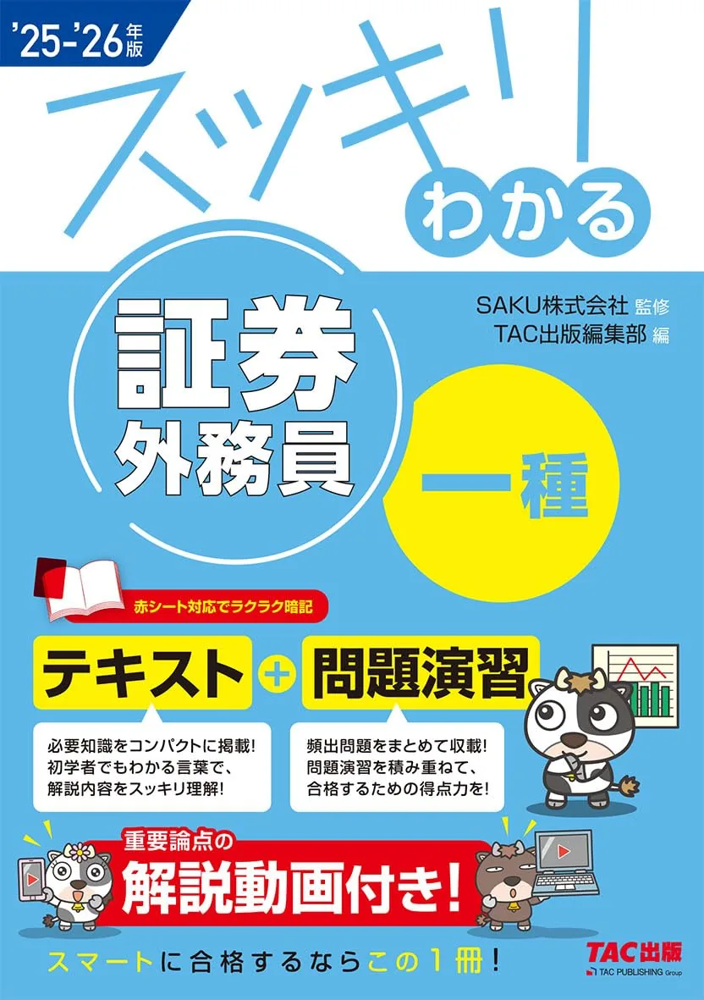
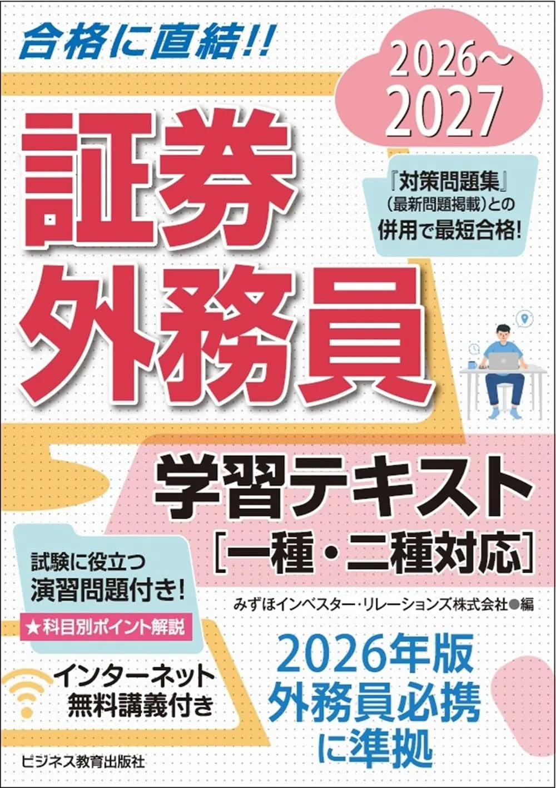

証券外務員試験のおすすめテキスト3選【2026年度版·独学】
証券外務員試験の独学教材は、日本証券業協会発行の外務員必携（全4巻）が正本で、市販テキストはその理解を補助する1冊に絞るのが基本形です。二種は70問120分·300点満点·210点合格、一種は100問160分·440点満点·308点合格。合否は総合7割のみ（分野別最低ラインなし·要項で再確認）です。
この記事の信頼性について
| 執筆 | 証外マスター編集部（資格学習サイトの編集チーム） |
|---|---|
| 確認 | 公式情報確認担当（公開前に一次情報との照合を行う担当者） |
| 事実確認日 | 2026-06-16 |
| 主な参照元 |
1市販テキストを選ぶ3基準（必携·章立て·区分）
市販テキストは、外務員必携を置き換えるものではなく、図解·要点整理·演習導線で理解を補助する1冊として選びます。選ぶ前に要項で一種/二種と問題数を確認し、次の3点で比較してください。具体例として6月16日開始·残り16週·週8時間なら、平日60分必携+日曜3時間市販テキストが続きやすい配分です。
| 観点 | 確認内容 |
|---|---|
| 必携との役割 | 正本は必携4巻·市販は補助1冊まで |
| 章立て | 4分野（商品·勧誘·金商法·その他法令）が追えるか |
| 区分 | 一種専用か·二種範囲が目次で分かるか |
必携の版数確認と中古注意は 証券外務員試験のテキスト·外務員必携の選び方 が詳しいです。本記事は市販3冊の比較に特化し、問題集·模試は別記事で扱います。
おすすめテキスト3選（比較）
価格・在庫・版情報は執筆時点（2026-06-16）のAmazon税込参考です。購入前に必ず販売ページでご確認ください。
| 順位 | 商品名 | 価格（税込参考） | ページ数 | 向いている人 |
|---|---|---|---|---|
| 1 | うかる! 証券外務員一種 必修テキスト 2025-2026年版 | ¥2,530 | 464 | 一種受験で論点を網羅的に押さえたい初学者 |
| 2 | 2025-2026年版 スッキリわかる 証券外務員一種（テキスト+問題演習） | ¥2,420 | 456 | 図解と解説動画で理解を補強し、演習も同冊で回したい人 |
| 3 | 2026-2027 証券外務員 学習テキスト（一種・二種対応） | ¥2,750 | 188 | 二種70問120分を主軸に、コンパクト1冊で全体像を掴みたい人 |

うかる! 証券外務員一種 必修テキスト 2025-2026年版
- 一種100問160分の4分野を章立てで整理
- 必修論点を厚めに解説し独学の定番として選ばれやすい
- うかる!シリーズの問題集と系列を揃えやすい

2025-2026年版 スッキリわかる 証券外務員一種（テキスト+問題演習）
- 解説動画付きで通勤時間にもインプット可能
- テキストと問題演習が一体で往復学習しやすい
- 赤シート対応で暗記項目の確認がしやすい

2026-2027 証券外務員 学習テキスト（一種・二種対応）
- 一種・二種の出題範囲を1冊に集約
- 188ページで全体像を短期間に俯瞰しやすい
- 同社の問題集シリーズと併用しやすい
23冊の比較表（価格·ページ·向き不向き）
比較表は「安い順」ではなく、受験区分と学習スタイルで判断してください。執筆時点（2026-06-16）のAmazon税込参考です。購入前に再確認が必要です。
| 順位 | 書名（略） | 出版社 | ページ | 価格参考 | 区分 |
|---|---|---|---|---|---|
| 1位 | うかる!必修テキスト | 日経BP | 464 | 2,530円 | 一種 |
| 2位 | スッキリわかる一種 | TAC出版 | 456 | 2,420円 | 一種 |
| 3位 | 学習テキスト | ビジネス教育 | 188 | 2,750円 | 一種·二種 |
- 一種100問160分なら1位か2位
- 二種70問120分で短時間に全体像を掴むなら3位
- という切り分けが定番
3冊同時購入は避け、必携到着後2週間の試用判断後に1冊決定してください。
31位：うかる!必修テキスト（一種·464ページ）
「うかる! 証券外務員一種 必修テキスト 2025-2026年版」は、日経BP·464ページの一種向け定番です。4分野の論点を章立てで整理し、独学で第1周を進めやすい厚みがあります。Amazon税込参考2,530円（執筆時点）。
| 項目 | 内容 |
|---|---|
| 向く人 | 一種受験·論点網羅重視 |
| 強み | 必修論点の整理·シリーズ問題集と連動 |
| 注意 | 二種のみ受験なら範囲が広い章は要項で除外 |
向いている人：一種100問160分を初めて独学する人、うかる!問題集と出版社を揃えて復習サイクルを組みたい人。一例として7月第3週から週8時間で第1周し、9月第1週に同系列の問題集追加を検討する流れと相性がよいです。
42位：スッキリわかる一種（TAC·動画付き·456ページ）
2025-2026年版 スッキリわかる 証券外務員一種は、TAC出版·456ページ·解説動画付きです。テキストと問題演習が一体で、図解中心にインプット→演習の往復がしやすい構成です。赤シート対応で暗記項目の自己確認にも向きます。Amazon税込参考2,420円（執筆時点）。
| 項目 | 内容 |
|---|---|
| 向く人 | 図解·動画で理解したい一種受験者 |
| 強み | テキスト+演習一体·通勤時間の動画視聴 |
| 注意 | 問題演習は同冊内·別冊問題集との役割分担を決める |
向いている人：通勤30分×週5で動画視聴を組み込みたい社会人、テキスト第1周と軽い演習を1冊で済ませたい人。例として8月の平日45分を「20分動画+25分テキスト」に固定すると16週計画と整合しやすいです。
53位：学習テキスト（一種·二種対応·188ページ）
2026-2027 証券外務員 学習テキストは、ビジネス教育出版社·188ページ·一種·二種対応のコンパクト本です。ページ数は少ない一方、目次で二種範囲と一種追加範囲を切り分けやすい構成です。Amazon税込参考2,750円（執筆時点）。
| 項目 | 内容 |
|---|---|
| 向く人 | 二種70問120分·短期で全体像を掴みたい人 |
| 強み | 1冊で区分対応·必携読み前の地図作り |
| 注意 | 解説は要点型·深読みは必携に戻る |
向いている人：二種210点合格を主目標に、残り12週以下で市販1冊だけ足したい人。具体例として6月16日開始なら7月第2週に到着、8月末までに188ページを2周→9月から演習10問/週、という短サイクルと相性がよいです。一種受験者は補助本として使い、詳細は必携で補完してください。
6必携4巻との併用サイクル（16週例）
学習の正本は外務員必携4巻です。市販テキスト1冊は、必携の章を読む前後に要点を確認する用途が効率的です。6月16日開始·残り16週·週8時間の例です。
| 時期 | 必携 | 市販テキスト |
|---|---|---|
| 6月 | 要項·4巻版数確認 | 3冊比較·7月第2週までに1冊決定 |
| 7〜8月 | 4分野を週1ブロック | 該当章の要点5ページ/日 |
| 9月 | 弱点分野を再読 | 演習10問/週（当サイトまたは問題集） |
| 10月以降 | 解き直し優先 | 新規購入を止める |
必携到着後14日以内に第1章+演習10問で試用判断する手順は証券外務員試験のテキスト·外務員必携の選び方 の表をそのまま使えます。演習の回し方は 証券外務員試験の過去問·模試の使い方、週次配分は 証券外務員試験の勉強計画の立て方 と併読すると16週表が完成します。
7購入順序と次に読む記事
教材購入の順番は固定です。①外務員必携4巻1セット → ②市販テキスト1冊 → ③問題集1冊 → ④模試·直前（任意）。②を決めたら8週前までに版を固定し、新規教材の追加を抑えてください。
・必携の選び方 → 外務員必携の選び方
・週次計画 → 学習計画の立て方
・独学Day1 → 独学の始め方
・演習サイクル → 過去問·演習の使い方
問題集·模試の比較は、テキスト第1周40%到達後に検討するのが基本です。テキストと同系列の問題集を選ぶと、誤答ノートの章番号が一致し復習が楽になります。
8よくある質問
外務員必携があれば市販テキストは不要ですか？
二種受験者は一種向けテキストを買えますか？
価格·在庫·版はどこで確認しますか？
記事の基本情報
| ジャンル | 独学対策 |
|---|---|
| タグ | 独学 / 教材 / 学習計画 |
公式情報の確認
公式情報の確認：証券外務員（一種・二種）の最新情報は、日本証券業協会（公式）などの公式情報を必ず確認してください。本人に割り当てられた試験会場は受験票の表記が正本です。